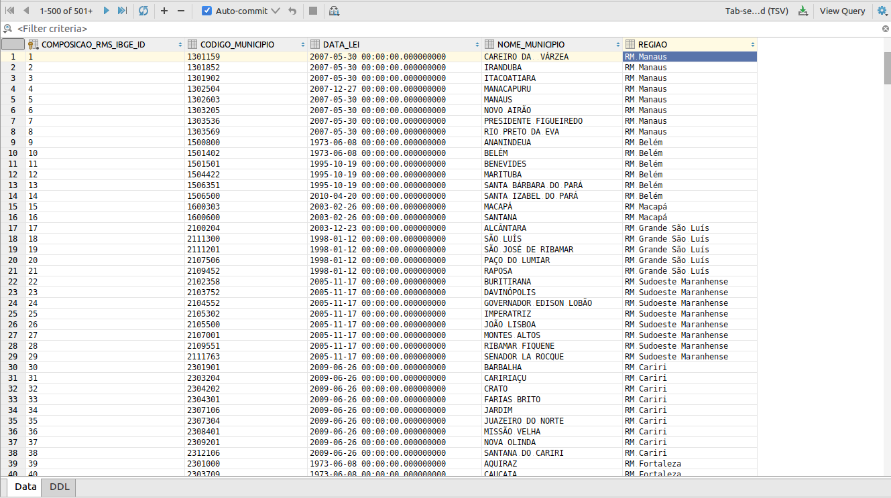

Importação de planilha para um banco de dados
Neste primeiro exemplo de uso da biblioteca, estaremos realizando a importação de uma planilha de dados do IBGE em formato xls, diretamente para a entidade de uma tabela do banco de dados. Em seguida gravaremos a mesma em uma base de dados utilizando a engine de banco H2. Para realizar isto estaremos utilizando as seguintes bibliotecas:
- Tecsinapse Data IO
- Tecsinapse Data IO - Java Time converters
- Hibernate (Não é obrigatório, mas como vamos salvar em banco vamos usar o hibernate para persistir a entidade no banco)
- Database h2 (Não é obrigatório, mas como vamos gravar em banco, utilizaremos esta engine de banco de dados)
- Testng (para escrever a execução em forma de testes)
Criando a entidade da dados com mapeamento de colunas
Para os campos que queremos preencher com as informações do arquivos faremos o mapeamento destes campos nos setters dos mesmos
No códigos acima, temos os seguintes mapeamentos de colunas:
- Região:
@TableCellMapping(columnIndex = 0)- Primeira coluna da planilha mapeada como string (padrão); - Código do município:
@TableCellMapping(columnIndex = 2, converter = IntegerTableCellConverter.class)- Terceira coluna da planilha mapeada como Integer; - Nome do município:
@TableCellMapping(columnIndex = 3)- Quarta coluna da planilha mapeada como string (padrão); - Data da lei:
@TableCellMapping(columnIndex = 5, converter = LocalDateTableCellConverter.class)- Sexta coluna da planilha mapeada como LocalDate do Java(8) time;
O mapeamento acima irá converter os dados das colunas para o formato exigido por cada campo mapeado.
Criando o código que irá processar nossa planilha e gravar no banco
O código acima irá processar a planilha e devolver uma lista com as entidades preenchidas, deixando para nós apenas o trabalho de gravarmos no banco de dados. O resultado após a execução do código é apresentado na imagem abaixo:

Este é um exemplo simples de um dos funcionamentos da biblioteca. Em breve estaremos disponibilizando mais formas de utilização da biblioteca que não se resume a apenas a importação, mas também é possível exportar em vários formatos.
No link a seguir é possível baixar o projeto de exemplo(s) com estes código para execução local: https://github.com/edimarlnx/tecsinapse-data-io-samples